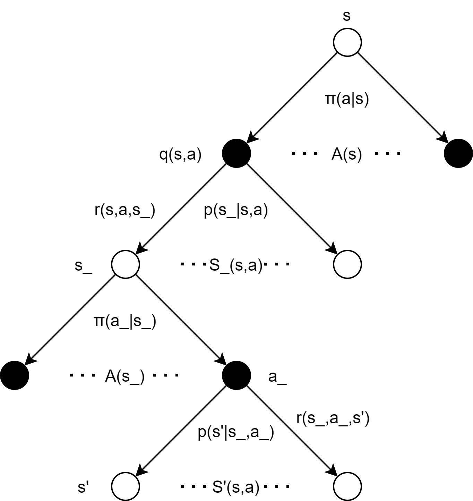
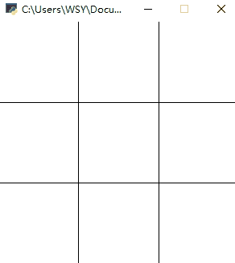

在文章 强化学习实战 | 自定义Gym环境 中 ，我们了解了一个简单的环境应该如何定义，并使用 print 简单地呈现了环境。在本文中，我们将学习自定义一个稍微复杂一点的环境——井字棋。回想一下井字棋游戏：
- 这是一个双人回合制博弈游戏，双方玩家使用的占位符是不一样的（圈/叉），动作编写需要区分玩家
- 双方玩家获得的终局奖励是不一样的，胜方+1，败方-1（除非平局+0），奖励编写需要区分玩家
- 终局的条件是：任意行 / 列 / 对角 占满了相同的占位符 or 场上没有空位可以占位
- 从单个agent的视角看，当前状态 s 下采取动作 a 后，新的状态 s_ 并不是后继状态，而是一个等待对手动作的中间状态，真正的后继状态是对手动作之后产生的状态 s'（除非采取动作 a 后游戏直接结束）。正如Sliver在课上回答同学关于多智能体应该如何处理时说的：“把其他agent也当作环境的一部分”，如下图所示：

除了游戏本身的机制，考虑到与gym的API接口格式的契合，通过外部循环控制游戏进程是较方便的，所以env本身定义时不必要编写控制游戏进程 / 切换行动玩家的代码。另外，我们还需要更生动的环境呈现方式，而不是print！那么，接下来我们就来实现上述的目标吧！
步骤1：新建文件
来到目录：D:\Anaconda\envs\pytorch1.1\Lib\site-packages\gym\envs\user，创建文件 __init__.py 和 TicTacToe_env.py（还记得吗？文件夹user是文章 强化学习实战 | 自定义Gym环境 中我们创建的用来存放自定义环境的文件夹）。
步骤2：编写 TicTacToe_env.py 和 __init__.py
gym内置了一个绘图工具rendering，不过功能并不周全，想要绘制复杂的东西非常麻烦。本文不打算深入研究，只借助rendering中基本的线条 / 方块 / 圆圈呈现环境（更生动的游戏表现我们完全可以通过pygame来实现）。rendering是单帧绘制的，当调用env.render()时，将呈现当前 self.viewer.geoms 中所记录的绘画元素。环境的基本要素设计如下：
- 状态：由二维的numpy.array表示，无占位符值为0，有蓝色占位符值为1，有红色占位符值为-1。
- 动作：设计为一个字典，有着格式：action = {'mark':'blue', 'pos':(x, y)}，其中'mark'表示占位符的颜色，用以区分玩家，'pos'表示占位符的位置。
- 奖励：锁定蓝方视角，胜利+1，失败-1，平局+0。
TicTacToe_env.py 的整体代码如下：
import gym import random import time import numpy as np from gym.envs.classic_control import rendering class TicTacToeEnv(gym.Env): def __init__(self): self.state = np.zeros([3, 3]) self.winner = None WIDTH, HEIGHT = 300, 300 self.viewer = rendering.Viewer(WIDTH, HEIGHT) def reset(self): self.state = np.zeros([3, 3]) self.winner = None self.viewer.geoms.clear() # 清空画板中需要绘制的元素 self.viewer.onetime_geoms.clear() def step(self, action): # 动作的格式：action = {'mark':'circle'/'cross', 'pos':(x,y)}# 产生状态 x = action['pos'][0] y = action['pos'][1] if action['mark'] == 'blue': self.state[x][y] = 1 elif action['mark'] == 'red': self.state[x][y] = -1 # 奖励 done = self.judgeEnd() if done: if self.winner == 'blue': reward = 1 else: reward = -1 else: reward = 0 # 报告 info = {} return self.state, reward, done, info def judgeEnd(self): # 检查两对角 check_diag_1 = self.state[0][0] + self.state[1][1] + self.state[2][2] check_diag_2 = self.state[2][0] + self.state[1][1] + self.state[0][2] if check_diag_1 == 3 or check_diag_2 == 3: self.winner = 'blue' return True elif check_diag_1 == -3 or check_diag_2 == -3: self.winner = 'red' return True # 检查三行三列 state_T = self.state.T for i in range(3): check_row = sum(self.state[i]) # 检查行 check_col = sum(state_T[i]) # 检查列 if check_row == 3 or check_col == 3: self.winner = 'blue' return True elif check_row == -3 or check_col == -3: self.winner = 'red' return True # 检查整个棋盘是否还有空位 empty = [] for i in range(3): for j in range(3): if self.state[i][j] == 0: empty.append((i,j)) if empty == []: return True return False def render(self, mode='human'): SIZE = 100 # 画分隔线 line1 = rendering.Line((0, 100), (300, 100)) line2 = rendering.Line((0, 200), (300, 200)) line3 = rendering.Line((100, 0), (100, 300)) line4 = rendering.Line((200, 0), (200, 300)) line1.set_color(0, 0, 0) line2.set_color(0, 0, 0) line3.set_color(0, 0, 0) line4.set_color(0, 0, 0) # 将绘画元素添加至画板中 self.viewer.add_geom(line1) self.viewer.add_geom(line2) self.viewer.add_geom(line3) self.viewer.add_geom(line4) # 根据self.state画占位符 for i in range(3): for j in range(3): if self.state[i][j] == 1: circle = rendering.make_circle(30) # 画直径为30的圆 circle.set_color(135/255, 206/255, 250/255) # mark = blue move = rendering.Transform(translation=(i * SIZE + 50, j * SIZE + 50)) # 创建平移操作 circle.add_attr(move) # 将平移操作添加至圆的属性中 self.viewer.add_geom(circle) # 将圆添加至画板中 if self.state[i][j] == -1: circle = rendering.make_circle(30) circle.set_color(255/255, 182/255, 193/255) # mark = red move = rendering.Transform(translation=(i * SIZE + 50, j * SIZE + 50)) circle.add_attr(move) self.viewer.add_geom(circle) return self.viewer.render(return_rgb_array=mode == 'rgb_array')
在 __init__.py 中引入类的信息，添加：
from gym.envs.user.TicTacToe_env import TicTacToeEnv
步骤3：注册环境
来到目录：D:\Anaconda\envs\pytorch1.1\Lib\site-packages\gym，打开 __init__.py，添加代码：
register( id="TicTacToeEnv-v0", entry_point="gym.envs.user:TicTacToeEnv", max_episode_steps=20, )
步骤4：测试环境
在测试代码中，我们在主循环中让游戏不断地进行。蓝红双方玩家以0.5s的间隔，随机选择空格子动作，代码如下：
import gym import random import time # 查看所有已注册的环境 # from gym import envs # print(envs.registry.all()) def randomAction(env_, mark): # 随机选择未占位的格子动作 action_space = [] for i, row in enumerate(env_.state): for j, one in enumerate(row): if one == 0: action_space.append((i,j)) action_pos = random.choice(action_space) action = {'mark':mark, 'pos':action_pos} return action def randomFirst(): if random.random() > 0.5: # 随机先后手 first_, second_ = 'blue', 'red' else: first_, second_ = 'red', 'blue' return first_, second_ env = gym.make('TicTacToeEnv-v0') env.reset() # 在第一次step前要先重置环境 不然会报错 first, second = randomFirst() while True: # 先手行动 action = randomAction(env, first) state, reward, done, info = env.step(action) env.render() time.sleep(0.5) if done: env.reset() env.render() first, second = randomFirst() time.sleep(0.5) continue # 后手行动 action = randomAction(env, second) state, reward, done, info = env.step(action) env.render() time.sleep(0.5) if done: env.reset() env.render() first, second = randomFirst() time.sleep(0.5) continue
效果如下图所示：

后文：强化学习实战 | 表格型Q-Learning玩井字棋（一）搭个框架